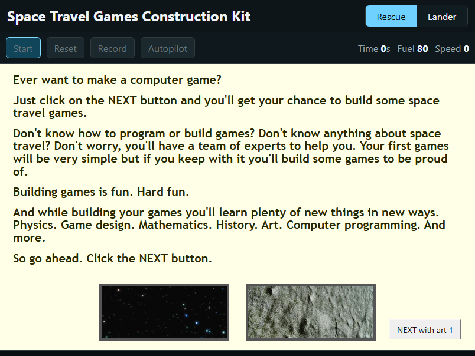
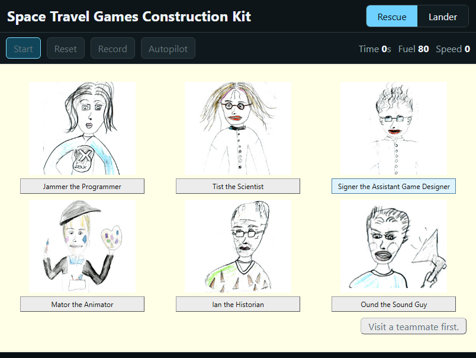
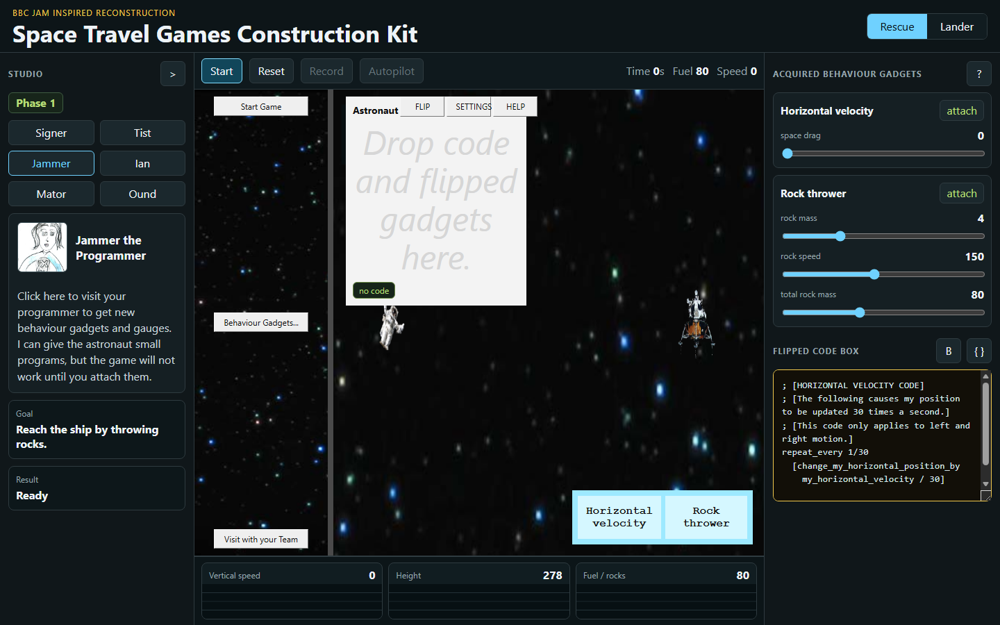

The shared Drive folder contained media files, old HTML launchers, Flash demos, and Imagine Logo .IMP projects. The original browser plugin packages referenced by the launch pages were not present.
The modern app was rebuilt as a static browser app using index.html, styles.css, app.js, and recovered assets in the assets folder.
The app now has an intro, a six-member team chooser, object-back behaviour drops, flip-over code boxes, editable autopilot logs, original-style artwork, and two playable space-game scenarios.
Build Timeline
1
Started from the paper and a blank project
The first version was a browser prototype inspired by the BBC Jam paper. It focused on the construction-kit idea: players build small space games by combining visible behaviours, physics, gauges, and team advice.
2
Downloaded and compared the old files
After the Drive folder was shared publicly, the original package was downloaded into original/. The comparison pass found usable assets and several .IMP projects, but not the old .IIP plugin packages needed to run the historical app directly.
3
Mined the Imagine Logo projects
The .IMP files were binary Imagine Logo projects, not JavaScript source. Text search still recovered labels, RTF help pages, code fragments, original messages, team names, and the autopilot format. Those recovered strings became the guide for the reconstruction.
4
Rebuilt the construction-kit interaction
The app shifted from ordinary settings panels toward the original metaphor: visit the team, receive an unprogrammed game, open Behaviour Gadgets..., drag gadgets or flipped code onto object backs, then start the game to see which behaviours are missing.
5
Restored team and visual details
The six team members were renamed and expanded: Jammer, Tist, Signer, Mator, Ian, and Ound. The app now uses the recovered portrait drawings, original-style pale team pages, Tist's conservation-of-momentum formulas, and stage controls that echo the old 804 by 604 interface.
6
Corrected autopilot from the original
The original autopilot did not just replay hidden input. It generated editable code lines such as schedule_vertical_throttle_slider_value 4.556 -6. The current app records throttle changes, emits that source-like log, accepts edits, and replays the edited schedule.
7
Used the 401 screen recording as a reference
The recording showed two important mismatches. The original 401 flow begins with an "Ever want to make a computer game?" intro page, and its team chooser uses the _b portrait drawings rather than the smaller _a artwork. Both were updated.
Visual Checkpoints



What Was Recreated
The app now preserves the main learning loop rather than just the look of the original. The player is framed as a game maker, consults a fictional expert team, receives behaviours as inspectable gadgets, and attaches those behaviours to objects to make a game work.
- Original media assets for backgrounds, sprites, portraits, and sound.
- Rescue and Lunar Lander modes with visible physics.
- Object-back code drops and wrong-object feedback.
- Flip-over code views and editable autopilot schedules.
- Recovered team dialogue and repeated visit sequencing.
What Is Still a Reconstruction
The historical project was built in Imagine Logo and ran through an old browser plugin. Since the plugin packages were missing, this app does not execute the original runtime. It is a careful modern reconstruction guided by the assets, strings, behaviours, and interaction evidence recovered during the conversation.
- Some original gadgets are still represented as web game rules rather than separate draggable code boxes.
- More RTF help pages can still be mined from the
.IMPfiles. - The code editor could further mimic the original red editable constants.
Files Created or Changed
The working app lives in index.html, styles.css, and app.js. The recovered-source notes live in original/COMPARISON.md. The project summary is in README.md. This page is build-notes.html.